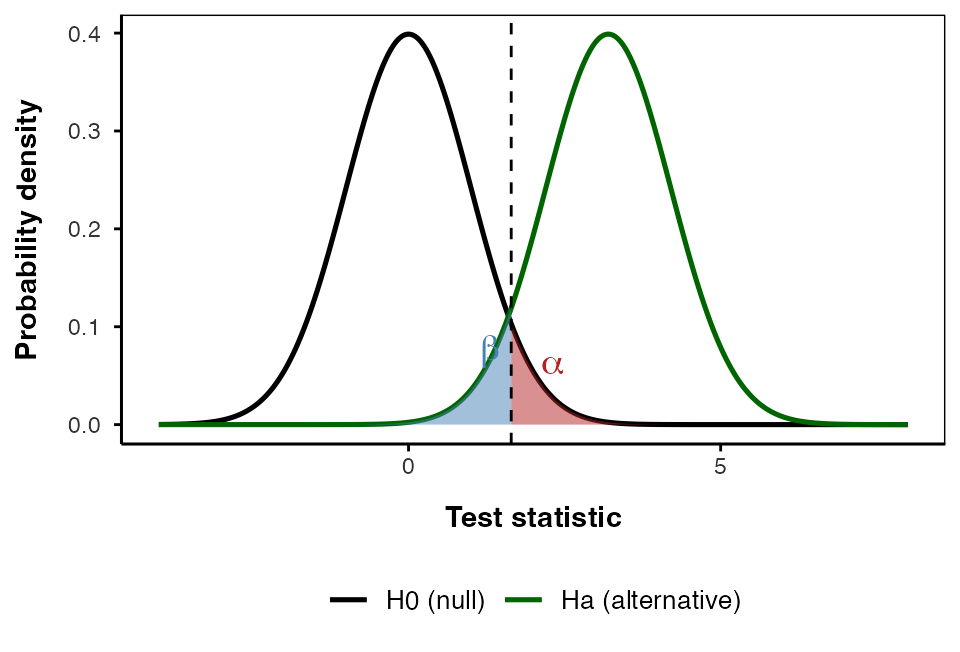
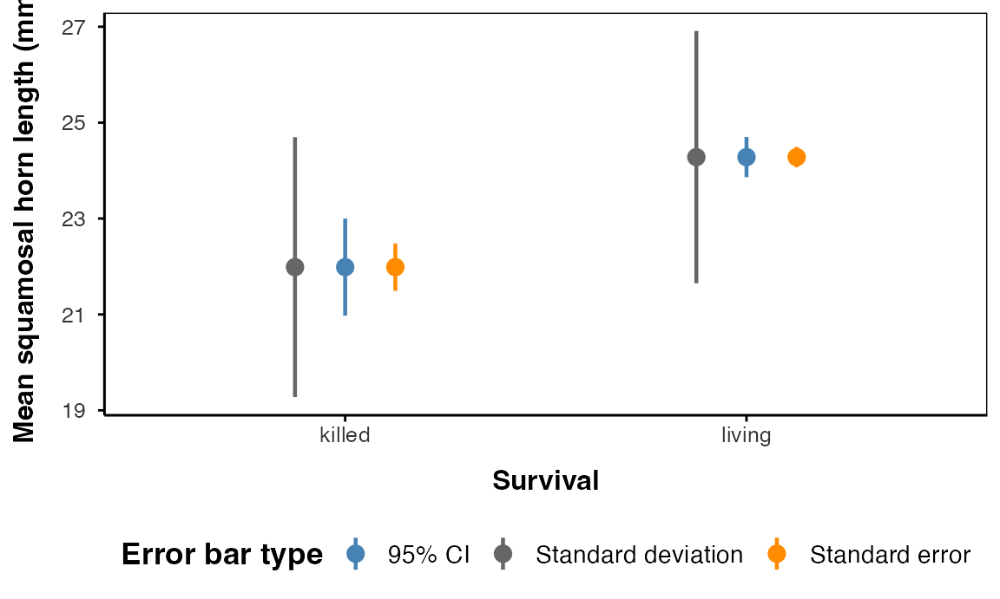

Lecture: Power and Type I & II Error
Errors and power
Inference
Power
Type I/II error, effect size, and statistical power — calculated a priori (before data collection) and retrospectively — using the pwr package, on the class pine needle data and the horned lizard predation dataset from Whitlock & Schluter, Ch. 12. Error bars and pseudoreplication, revisited.
Where We Left Off
Covered last time:
- Statistical inference fundamentals
- Hypothesis testing principles
- T-distributions
- One-sample, two-sample, and paired t-tests
Note
✅ Key idea from last lecture
A t-test gives you a p-value and a decision — reject or fail to reject H₀. Today asks the next question: how good is that decision, and how often could it be wrong?

Note
Today’s objectives
- Two ways to be wrong: Type I & Type II error
- Statistical power, and what changes it
- Power calculated two ways — a priori (before data collection) and retrospectively
- The
pwrpackage, and why it beats a hand-rolled workaround for unequal group sizes - Error bars and pseudoreplication, revisited
Part 1 · Two Ways to Be Wrong
The Decision Table
Even a well-run study can reach the wrong conclusion. Crossing the statistical decision against the unknown truth gives exactly four outcomes:
| H₀ actually true (no real effect) | H₀ actually false (real effect) | |
|---|---|---|
| Reject H₀ | Type I error — rate α | Correct decision |
| Fail to reject H₀ | Correct decision | Type II error — rate β |
- Type I error (α): you found an effect that isn’t real — a false positive
- Type II error (β): you missed an effect that is real — a false negative
- Power = 1 − β: the probability of correctly rejecting a false H₀
- α is set before data collection — it is a policy about acceptable false-positive risk, not something read off a p-value afterward
Note
📖 Reference
Gotelli & Ellison, A Primer of Ecological Statistics, Ch. 4 — Framing and Testing Hypotheses, covers the decision table and both error types. Whitlock & Schluter, Analysis of Biological Data, Ch. 6 — Hypothesis Testing, is the same material from the other textbook.
Tip
🖐 Which type of error, if any?
- A study concludes sunny-side pine needles are longer, when really there is no difference.
- A study fails to detect a real horn-length difference between surviving and predated lizards, and concludes there is none.
- A study correctly detects that predated lizards have shorter horns.
Seeing α and β
- Black curve — distribution of the test statistic if H₀ is true
- Green curve — distribution if Hₐ is true, shifted by the real effect
- Red area (α) — null curve beyond the critical value: Type I error
- Blue area (β) — alternative curve inside the acceptance region: Type II error
- Power is the rest of the green curve — beyond the critical value
Moving the critical value trades one error for the other. For a fixed sample size, you cannot shrink both at once.
Part 2 · Statistical Power
What Is Power, and What Moves It
Statistical power is the probability of detecting a true effect — of rejecting H₀ when it really is false. 80% power means an 80% chance of finding a real effect of a given size.
Power increases with:
- Larger sample size (n)
- Larger effect size — a bigger true difference
- Lower variability in the data
- Higher α — a more lenient significance threshold
A power analysis is typically run for one of three purposes:
- Before data collection, to determine the sample size a study needs — by far the most useful
- After a study, to evaluate whether its sample size was adequate
- To find the minimum effect size a given sample could realistically detect
Note
✅ Key idea
80% power is the usual convention for an adequately powered study. Everything in this lecture asks: for a given effect, n, and α, what is 1 − β?
Part 3 · Effect Size, Recap
Cohen’s d, and Cohen’s Own Benchmarks
You met Cohen’s d in the Non-Parametric worksheet: the difference between means, divided by the pooled standard deviation. It is unitless, so it is comparable across studies — and it is exactly what pwr and power.t.test()-style functions want as input.
cohen.ES(test = "t", size = "small")$effect.size[1] 0.2cohen.ES(test = "t", size = "medium")$effect.size[1] 0.5cohen.ES(test = "t", size = "large")$effect.size[1] 0.8Jacob Cohen himself proposed these as rough, field-general benchmarks — not a substitute for a real pilot estimate when you have one.
| Size | d |
|---|---|
| Small | 0.2 |
| Medium | 0.5 |
| Large | 0.8 |
Tip
🖐 Where does our data land?
Keep these three numbers in mind — the next section computes real d’s for two datasets, and you can judge for yourself which bucket each falls into.
Part 4 · Seeing Power: Two Real Datasets
Low Power and High Power, Side by Side
Two two-sample comparisons, two very different amounts of power:
- Pine needles — our own class data, 4 trees per side
- Horned lizards — squamosal horn length of lizards that survived shrike predation vs. those that were killed (Young et al., the running example of Whitlock & Schluter Ch. 12 — Comparing Two Means)
pine_df <- read_csv("data/pine_data.csv")
p_df <- pine_df %>%
group_by(team, side) %>%
summarise(needle_length_mm = mean(needle_length_mm, na.rm = TRUE),
.groups = "drop")
lizard_df <- read_csv("data/horned_lizards.csv") %>%
filter(!is.na(squamosal_horn_length_mm))
p_df %>% group_by(side) %>% reframe(summary_stats(needle_length_mm))# A tibble: 2 × 7
side n mean sd se ci_lower ci_upper
<chr> <int> <dbl> <dbl> <dbl> <dbl> <dbl>
1 shady 4 14.1 2.02 1.01 10.9 17.3
2 sunny 4 15.2 1.57 0.786 12.7 17.7lizard_df %>% group_by(survival) %>% reframe(summary_stats(squamosal_horn_length_mm))# A tibble: 2 × 7
survival n mean sd se ci_lower ci_upper
<chr> <int> <dbl> <dbl> <dbl> <dbl> <dbl>
1 killed 30 22.0 2.71 0.495 21.0 23.0
2 living 154 24.3 2.63 0.212 23.9 24.7d_unpaired <- cohens_d(needle_length_mm ~ side, data = p_df)
d_unpairedCohen's d | 95% CI
-------------------------
-0.60 | [-2.01, 0.84]
- Estimated using pooled SD.p_wide_df <- p_df %>%
pivot_wider(names_from = side, values_from = needle_length_mm)
d_paired <- cohens_d(p_wide_df$shady, p_wide_df$sunny, paired = TRUE)
d_pairedCohen's d | 95% CI
-------------------------
-1.36 | [-2.74, 0.10]d_lizard <- cohens_d(squamosal_horn_length_mm ~ survival, data = lizard_df)
d_lizardCohen's d | 95% CI
--------------------------
-0.87 | [-1.27, -0.47]
- Estimated using pooled SD.The Comparison

Note
✅ Key idea
Same statistical machinery, same kind of test, wildly different power — because sample size and effect-size-relative-to-noise differ. Nothing about the pine data is broken; it simply cannot see an effect this size with 4 trees per side.
Part 5 · A Priori Power: Planning Before You Collect Data
The Question to Ask Before the Field Season
The most useful power analysis happens before you collect a single data point: guess or borrow an effect size, then ask what sample size would give you 80% power.
pwr.t.test(d = d_unpaired$Cohens_d, power = 0.80,
sig.level = 0.05, type = "two.sample")
Two-sample t test power calculation
n = 43.89921
d = 0.6047825
sig.level = 0.05
power = 0.8
alternative = two.sided
NOTE: n is number in *each* group44 trees per side. We collected four.
Note
📖 Reference
Whitlock & Schluter, Ch. 14 — Designing Experiments, and Gotelli & Ellison, Ch. 4, both cover planning sample size before a study.
Warning
⚠️ This is why “we found no difference” is usually the wrong conclusion
A non-significant result from an underpowered study does not mean there is no effect. It means the study could never have found one.
Practice 5 · A Priori Power for a Smaller Effect
Tip
🖐 Your turn — run this
The horned lizards gave us a large effect (d ≈ 0.87). Suppose instead you are planning a new study where you only expect a medium effect (d = 0.5, Cohen’s own benchmark). Assuming equal group sizes, how many lizards per group would you need for 80% power?
pwr.t.test(d = 0.5, power = 0.80, sig.level = 0.05, type = "two.sample")
Two-sample t test power calculation
n = 63.76561
d = 0.5
sig.level = 0.05
power = 0.8
alternative = two.sided
NOTE: n is number in *each* groupHow does that n compare to the 44 trees per side the pine study needed?
Part 6 · The pwr Package, and Unequal Group Sizes
When Your Two Groups Aren’t the Same Size
pwr generalizes power analysis beyond the two-sample t-test — pwr.anova.test(), pwr.r.test(), and pwr.chisq.test() cover ANOVA, correlation, and categorical data, all with the same interface, for later units.
Right now, the feature we need is pwr.t2n.test() — it takes the two actual group sizes directly. No averaging, no workaround:
pwr.t2n.test(n1 = sum(lizard_df$survival == "living"),
n2 = sum(lizard_df$survival == "killed"),
d = d_lizard$Cohens_d,
sig.level = 0.05)
t test power calculation
n1 = 154
n2 = 30
d = 0.8679866
sig.level = 0.05
power = 0.9910174
alternative = two.sided
Important
⚠️ The old workaround
Before pwr.t2n.test(), an unbalanced design forced you to fake a single n — usually the harmonic mean of n₁ and n₂ — and feed that to a function built for equal groups. It is an approximation. pwr.t2n.test() uses both real sample sizes directly and is the better tool whenever n₁ ≠ n₂.
Part 7 · Retrospective (Post-Hoc) Power
Computing Power From What You Actually Observed
The other direction: after a study, ask what power your actual n and observed effect size gave you.
pwr.t.test(n = 4, d = d_unpaired$Cohens_d,
sig.level = 0.05, type = "two.sample")
Two-sample t test power calculation
n = 4
d = 0.6047825
sig.level = 0.05
power = 0.112253
alternative = two.sided
NOTE: n is number in *each* group11% power. Even if the pine difference is completely real, an unpaired study with 4 trees per side would miss it about 9 times out of 10.
Warning
⚠️ A warning about “post-hoc power”
Computing power from the effect size you observed is a known trap. It is fine for what we used it for here: planning the next study.
It is not a valid way to explain away a non-significant result — observed power is just a re-expression of the p-value you already have. “Our result was non-significant, but we had low power” says the same thing twice.
Practice 6 · Retrospective Power for the Paired Design
Tip
🖐 Your turn — run this
You already calculated d_paired in Part 4 (the same four trees, paired instead of unpaired). Compute the retrospective power of the paired design at n = 4, the same way Part 7 just did for the unpaired one.
pwr.t.test(n = 4, d = d_paired$Cohens_d,
sig.level = 0.05, type = "paired")
Paired t test power calculation
n = 4
d = 1.361371
sig.level = 0.05
power = 0.4635201
alternative = two.sided
NOTE: n is number of *pairs*How much higher is it than the unpaired 11%?
Part 8 · Pairing Buys You Power
The Whole Economics of the Study
Pairing does not just give a smaller p-value — it changes what the study needed to begin with.
pwr.t.test(d = d_paired$Cohens_d, power = 0.80,
sig.level = 0.05, type = "paired")
Paired t test power calculation
n = 6.406838
d = 1.361371
sig.level = 0.05
power = 0.8
alternative = two.sided
NOTE: n is number of *pairs*7 trees, total — for 80% power, paired.
| Design | Power at n = 4 | Trees for 80% power |
|---|---|---|
| Unpaired | 11% | 44 per side |
| Paired | 46% | 7 total |
Important
Same trees. Same needles. Same measurements.
Pairing takes this study from needing 44 trees per side to needing 7 trees. That is not a statistical trick — it is what respecting the design of your own experiment is worth.
Part 9 · Error Bars, Revisited
SD, SE, and CI Answer Different Questions
- Standard deviation (SD) — spread of the raw data
- Standard error (SE) — precision of the mean,
SD / sqrt(n) - 95% confidence interval (CI) — plausible range for the true mean, built from SE and the t-distribution
summary_stats() gives you all three from one call. A large sample doesn’t shrink SD — it shrinks SE and the CI, because you’re now estimating the mean more precisely, not describing less variable lizards.

Part 10 · Pseudoreplication
Sampling and Pseudoreplication
Pseudoreplication occurs when measurements that are not independent are analyzed as if they were.
- Measuring the same individual multiple times
- Treating multiple fish from the same tank as independent
- Using multiple data points from a single site
It results in underestimated standard errors and inflated Type I error rates — it makes a study look more precise, and more significant, than it actually is.
Important
We have been doing this all along
Our pine needle data has 64 rows. Analyzed as 64 independent needles it would look like a large, well-powered study. Analyzed honestly — 4 trees — it has 11% power unpaired, 46% paired.
Pseudoreplication would not have made the study better. It would only have made us believe it was.
Pseudoreplicated vs. True Replication

Aside · The 0.05 Debate
A Number That Was Always Meant to Be a Guideline
“If p is between 0.1 and 0.9 there is certainly no reason to suspect the hypothesis tested. If it is below 0.02 it is strongly indicated that the hypothesis fails to account for the whole of the facts. We shall not often be astray if we draw a conventional line at .05 …”
— R.A. Fisher, on the p-value as an informal measure of discrepancy between data and H₀
Fisher proposed 0.05 as a rough guideline, not a bright line. Modern critiques of “statistical significance” as a binary pass/fail argue power and effect size deserve at least as much attention as whether p cleared 0.05.

Summary and Key Takeaways
Key concepts covered:
- Type I (α) and Type II (β) error — the two ways a decision can be wrong; power = 1 − β
- Power rises with larger n, larger effect size, lower variability, and higher α
- A priori power (before data collection) tells you the n a study needs — the most useful use of this whole toolkit
- Retrospective power tells you what your finished study could have detected — useful for planning the next one, not for excusing a null result
- The
pwrpackage generalizes power analysis, andpwr.t2n.test()handles unequal group sizes directly - Pairing a design can be worth far more than adding raw sample size
- SD, SE, and CI answer three different questions about the same data
- Pseudoreplication inflates apparent precision by treating non-independent measurements as independent replicates
Note
📖 References
Gotelli & Ellison, Ch. 4 — Framing and Testing Hypotheses (errors and power); Whitlock & Schluter, Ch. 6 — Hypothesis Testing, and Ch. 14 — Designing Experiments (sample size and power planning).